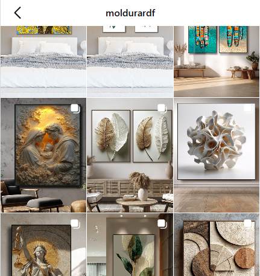
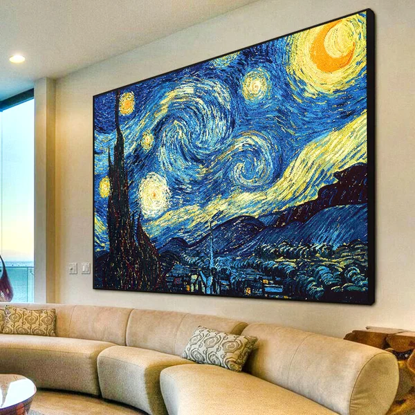

Uma presença digital à altura do valor que a Moldurar DF já entrega.
A D'Leads propõe uma operação em Meta Ads pensada para transformar repertório visual em procura qualificada, presença regional e intenção de compra no Distrito Federal.
As projeções desta proposta representam um cenário estimado de performance. Os resultados dependem da execução, da qualidade dos criativos, da resposta do público, das otimizações e da condução comercial ao longo do ciclo.
02. Cenário e oportunidade
Valor percebido vem antes do clique.
Quadros e molduras não entram na decisão apenas pelo produto. Entram pelo ambiente que constroem, pela assinatura estética que carregam e pela sensação de escolha bem feita que despertam.

A Moldurar DF atua em uma categoria em que acabamento, composição e contexto influenciam diretamente a venda. Por isso, a comunicação não pode parecer genérica ou promocional demais.
O papel da mídia é apresentar a marca com mais intenção: menos anúncio comum, mais vitrine bem dirigida. Quando o produto aparece no ambiente certo, a conversa deixa de ser só preço e passa a ser escolha.
03. Objetivo da operação
Quatro frentes para gerar demanda com mais consistência.
O primeiro ciclo foi desenhado para atrair atenção qualificada, transformar interesse em conversa e criar uma base mais sólida para crescimento comercial.
Entrar no radar
Colocar a Moldurar DF diante de pessoas com afinidade real com decoração, interiores e escolhas de maior valor agregado.
Gerar procura
Transformar atenção em cliques, mensagens e leads com mais chance de evolução comercial.
Elevar percepção
Fortalecer imagem, repertório visual e presença regional de forma coerente com o produto.
Crescer com leitura
Usar o primeiro mês como base de aprendizado para otimizar investimento e escalar com mais segurança.
04. Estratégia geral
Descoberta forte no início, retomada inteligente na sequência.
Instagram e Facebook funcionam aqui como um fluxo contínuo de apresentação, maturação e reconexão ao longo da semana.
Abrir novas frentes
Segunda, terça e quarta concentram a descoberta de novos públicos, o teste das peças e a leitura inicial de resposta.
→
Recuperar interesse
Quinta a domingo sustentam lembrança, aprofundam contato e ajudam a trazer de volta quem já demonstrou atenção.
05. Público-alvo
Um recorte com afinidade, repertório e capacidade de compra.
O foco inicial combina localização, perfil demográfico e comportamento para alcançar um público mais compatível com o ticket e com o posicionamento da Moldurar DF.

Público-Alvo
Perfil demográfico
Homens 25+
Perfil com poder de compra e interesse em composição visual, escritório, imóvel e ambientação.
Mulheres 30+
Público com atenção maior à curadoria da casa, acabamento e escolhas com valor estético.
Distrito Federal
Presença concentrada em regiões com maior potencial para consumo de decoração e interiores.
Interesses e comportamento
Decoração
Busca por peças que tragam identidade, composição e presença para o ambiente.
Arquitetura
Interesse em referências visuais, design de interiores e estética aplicada ao espaço.
Estilo de vida
Valorização de exclusividade, acabamento e escolhas que sinalizam gosto e cuidado.
06. Posicionamento da comunicação
A conversa precisa começar pelo desejo, não pelo desconto.
A marca deve aparecer com a mesma força visual que o produto entrega: bem resolvida, autoral e capaz de valorizar o ambiente antes mesmo da oferta.
A comunicação da Moldurar DF não deve pedir atenção; deve merecê-la. Cada peça precisa sugerir curadoria, acabamento e presença. Quando a estética é conduzida com precisão, o anúncio deixa de interromper e passa a convidar.
07. Lógica semanal da campanha
Uma semana desenhada para captar e reconectar.
Os dias de maior força concentram descoberta. O restante da semana preserva presença, reforça lembrança e amadurece o interesse.
Captação forte
Entrada da semana com maior intensidade para abrir audiência e gerar os primeiros sinais de interesse.
Expansão
Continuidade da prospecção com leitura de resposta e reforço dos formatos com melhor aderência.
Consolidação
Último pico da janela principal para ampliar alcance e preparar a etapa seguinte.
Remarketing
Reimpacto em quem já viu, clicou ou demonstrou atenção à proposta.
Lembrança
Presença contínua para manter a marca viva durante o processo de decisão.
Presença leve
Entrega mais moderada para manter consistência sem pressionar a verba.
Retomada
Fechamento da semana com reconexão e base para reabrir a prospecção.
08. Escala de investimento semanal
Uma progressão mensal pensada para validar antes de acelerar.
A lógica de investimento cresce ao longo do mês para aproveitar os aprendizados da operação e reduzir decisões prematuras de escala.
Lógica da verba e do ritmo
A distribuição semanal equilibra entrada forte em prospecção com uma retomada mais eficiente ao longo da semana, preservando controle e leitura de performance.
Segunda a quarta
Maior força de prospecçãoPeríodo de descoberta, teste criativo e abertura de novos públicos.
Quinta a domingo
Remarketing prioritárioJanela de reconexão, lembrança de marca e amadurecimento dos leads.
Ativação e primeiros testes
Ajustes e expansão
Consolidação do que respondeu melhor
Maior intensidade sobre o melhor conjunto
Total mensal investido em mídia: R$ 770,00
| Semana | Objetivo | Investimento |
|---|---|---|
| Semana 1 | Validação inicial e calibração | R$ 140,00 |
| Semana 2 | Expansão guiada pelos primeiros sinais | R$ 175,00 |
| Semana 3 | Escala dos melhores conjuntos | R$ 210,00 |
| Semana 4 | Maior intensidade sobre o que respondeu melhor | R$ 245,00 |
| Total sugerido | Curva mensal dentro da faixa proposta | R$ 770,00 |
A verba entra de forma progressiva para que o investimento acompanhe evidência, e não expectativa. Isso dá mais segurança para ajustar rota sem perder ambição.
09. Distribuição de verba por dia
A força da semana está concentrada nos dias certos.
Segunda, terça e quarta recebem a maior pressão comercial. Quinta a domingo sustentam presença e remarketing com intensidade menor.
A distribuição diária pode ser recalibrada conforme a resposta da campanha, mas o racional inicial prioriza prospecção no começo da semana e retomada nos dias seguintes.
10. Plano de criativos
Peças pensadas para repertório visual e intenção comercial.
O primeiro mês combina formatos diferentes para testar estética, narrativa e resposta do público sem perder unidade de linguagem.
Peça de abertura
O quadro como centro do ambiente.
Uma imagem de entrada para vender contexto, desejo e presença visual antes da argumentação comercial.
Três peças para destacar composição, acabamento e leitura mais refinada do produto.
Duas sequências com ambiente, combinação de obras e variações de uso no espaço.
Duas peças para mostrar textura, moldura, detalhe e transformação visual do ambiente.
Uma peça de posicionamento, peças de retomada e um criativo flexível para sazonalidade.
11. Campanhas sazonais e de oportunidade
Calendário vivo, sem perder coerência de marca.
Datas e temas entram aqui como aceleradores de intenção, desde que reforcem o valor do produto e façam sentido dentro do universo da Moldurar DF.
Datas afetivas
Momentos como Dia das Mães, Namorados, Natal e Ano Novo podem ativar memória, presente e valor emocional.
Casa em movimento
Reforma, apartamento novo, renovação do ambiente e mudanças de fase costumam abrir boas janelas de compra.
Oportunidades do momento
Tendências de decoração, assuntos em alta e campanhas temáticas podem ampliar alcance com mais relevância.
12. Investimento e entregas
Uma estrutura clara, defensável e pronta para decisão.
O investimento inicial foi desenhado para abrir mercado, fortalecer percepção de marca e gerar leitura suficiente para otimizar a operação com segurança.
Planejamento, estrutura, segmentação, monitoramento e direção da operação ao longo do mês.
Faixa sugerida para o primeiro ciclo, com base mensal indicada em R$ 770,00.
Valor previsto para iniciar a operação com consistência e espaço real para leitura.
Planejamento da lógica de investimento e da estrutura de campanha para o ciclo inicial.
Gestão das campanhas em Instagram e Facebook com monitoramento e ajustes recorrentes.
Segmentação, orientação de copy, direcionamento criativo e leitura contínua de performance.
Acompanhamento estratégico para ganho de eficiência e tomada de decisão com base em dados.
Se o público responder bem, os criativos sustentarem a proposta e o atendimento comercial converter com eficiência, a verba pode evoluir de forma proporcional nos ciclos seguintes.
13. Meta inicial do primeiro mês
Uma ambição clara, escrita com responsabilidade.
O primeiro ciclo mira crescimento comercial, mais leads qualificados e uma presença digital mais forte, sem transformar projeção em promessa.
A meta inicial é buscar um cenário estimado de até 25% de crescimento em vendas no primeiro ciclo, desde que haja boa resposta do público, operação comercial ativa e atendimento eficiente. Trata-se de objetivo de performance, não de garantia absoluta.
Mais leads com maior intenção e conversas comerciais mais qualificadas.
Imagem de marca mais consistente, com ganho de presença e reconhecimento regional.
Aumento de consideração de compra e base mais forte para os próximos ciclos.
Leitura mais clara do que responde melhor em público, criativo e investimento.
14. Próximo passo e fechamento
Uma proposta pronta para avançar.
A D'Leads entra para organizar narrativa, investimento e presença digital com método, não apenas para colocar anúncios no ar.
A Moldurar DF já tem repertório para ocupar um espaço maior. Falta dar escala a essa percepção.
Com a aprovação, o próximo passo é alinhar o plano criativo, estruturar as campanhas e iniciar a operação com clareza, ritmo e direção comercial.
EscopoMeta Ads com prospecção e remarketing
InvestimentoR$ 1.900,00 a R$ 2.000,00 no ciclo inicial
ObjetivoMais procura qualificada, marca mais forte e presença regional consistente